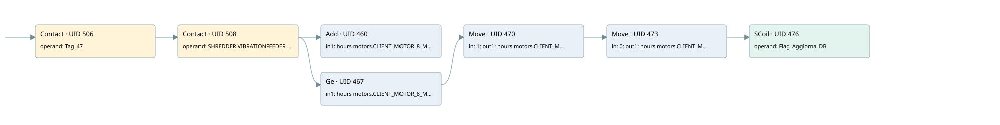

client motor 8
time work motor · 검색 색인 순서 8 · 원본 내부 NID 추정 8
백업 PLF 원본의 2857331 바이트 위치에서 복원한 XML. 검색 문서 1009의 객체 키 161022000a12000000000000와 연결했다. 이름 해석 12/12개. 남은 RefId는 상수 또는 미해석 참조다.
연결 구조 다시 그리기
원본 Part/PCon/Wire를 이용한 연결도다. TIA 화면의 래더 배치 또는 실행 결과를 재현한 그림은 아니다. 핀 연결은 아래 표와 원본 XML을 기준으로 읽는다. 노드 위에 마우스를 두면 피연산자 이름을 볼 수 있다.

접점·코일·블록과 피연산자
| Part UID | Gate | Negated 핀 | 연결 피연산자 |
|---|---|---|---|
| 506 | Contact | operand = Tag_47 | |
| 508 | Contact | operand = SHREDDER VIBRATIONFEEDER RUN | |
| 460 | Add | in1 = hours motors.CLIENT_MOTOR_8_MIN; in2 = 1; out = hours motors.CLIENT_MOTOR_8_MIN | |
| 467 | Ge | in1 = hours motors.CLIENT_MOTOR_8_MIN; in2 = 60 | |
| 470 | Move | in = 1; out1 = hours motors.CLIENT_MOTOR_8_HOUR | |
| 473 | Move | in = 0; out1 = hours motors.CLIENT_MOTOR_8_MIN | |
| 476 | SCoil | operand = Flag_Aggiorna_DB |
접점 경로를 펼친 조건식
Contact·O/A·비교기의 원본 연결을 읽기 쉽게 펼친 보조 해석이다. POWER는 전원 레일 시작을 뜻한다. 호출 블록·에지·타이머의 내부 동작과 다중 쓰기 순서는 이 표로 실행 검증하지 않았다. 미해석 핀과 RefId는 원문 연결표에서 확인한다.
| UID | 동작 | 대상 | 원본 접점 경로 | 내용 |
|---|---|---|---|---|
| 470 | Move | hours motors.CLIENT_MOTOR_8_HOUR | ((Tag_47 AND SHREDDER VIBRATIONFEEDER RUN) AND [hours motors.CLIENT_MOTOR_8_MIN >= 60]) | Move 입력 1 |
| 473 | Move | hours motors.CLIENT_MOTOR_8_MIN | Move UID 470.eno (블록 동작 확인) | Move 입력 0 |
| 476 | SCoil | Flag_Aggiorna_DB | Move UID 473.eno (블록 동작 확인) | 조건 성립 시 Set |
원본 배선 연결
| Wire UID | 동일 Wire 연결 끝점 |
|---|---|
| 510 | Powerrail {} ↔ Part 506.in |
| 489 | ORef 477 (Tag_47) ↔ Part 506.operand |
| 507 | Part 506.out ↔ Part 508.in |
| 490 | ORef 478 (SHREDDER VIBRATIONFEEDER RUN) ↔ Part 508.operand |
| 509 | Part 508.out ↔ Part 460.en ↔ Part 467.pre |
| 491 | ORef 479 (hours motors.CLIENT_MOTOR_8_MIN) ↔ Part 460.in1 |
| 492 | ORef 480 (1) ↔ Part 460.in2 |
| 493 | Part 460.out ↔ ORef 481 (hours motors.CLIENT_MOTOR_8_MIN) |
| 494 | ORef 482 (hours motors.CLIENT_MOTOR_8_MIN) ↔ Part 467.in1 |
| 495 | ORef 483 (60) ↔ Part 467.in2 |
| 496 | Part 467.out ↔ Part 470.en |
| 498 | ORef 484 (1) ↔ Part 470.in |
| 500 | Part 470.eno ↔ Part 473.en |
| 499 | Part 470.out1 ↔ ORef 485 (hours motors.CLIENT_MOTOR_8_HOUR) |
| 501 | ORef 486 (0) ↔ Part 473.in |
| 503 | Part 473.eno ↔ Part 476.in |
| 502 | Part 473.out1 ↔ ORef 487 (hours motors.CLIENT_MOTOR_8_MIN) |
| 504 | ORef 488 (Flag_Aggiorna_DB) ↔ Part 476.operand |
식별자 해석 근거 12개
| ORef UID | RefId | 이름 | IdentXmlPart 파일 | 해석 방법 |
|---|---|---|---|---|
| 477 | 1 | Tag_47 | 0613-IdentXmlPart.xml | UID/RID + search-text + NID agreement |
| 478 | 50 | SHREDDER VIBRATIONFEEDER RUN | 0613-IdentXmlPart.xml | UID/RID + search-text + NID agreement |
| 479 | 52 | hours motors.CLIENT_MOTOR_8_MIN | 0615-IdentXmlPart.xml | UID/RID + search-text + NID agreement |
| 480 | 7 | 1 | 0616-IdentXmlPart.xml | literal candidate: UID/RID/NID + nearby named declarations + search-text agreement |
| 481 | 52 | hours motors.CLIENT_MOTOR_8_MIN | 0615-IdentXmlPart.xml | UID/RID + search-text + NID agreement |
| 482 | 52 | hours motors.CLIENT_MOTOR_8_MIN | 0615-IdentXmlPart.xml | UID/RID + search-text + NID agreement |
| 483 | 8 | 60 | 0616-IdentXmlPart.xml | literal candidate: UID/RID/NID + nearby named declarations + search-text agreement |
| 484 | 7 | 1 | 0616-IdentXmlPart.xml | literal candidate: UID/RID/NID + nearby named declarations + search-text agreement |
| 485 | 54 | hours motors.CLIENT_MOTOR_8_HOUR | 0615-IdentXmlPart.xml | UID/RID + search-text + NID agreement |
| 486 | 12 | 0 | 0616-IdentXmlPart.xml | literal candidate: UID/RID/NID + nearby named declarations + search-text agreement |
| 487 | 52 | hours motors.CLIENT_MOTOR_8_MIN | 0615-IdentXmlPart.xml | UID/RID + search-text + NID agreement |
| 488 | 13 | Flag_Aggiorna_DB | 0613-IdentXmlPart.xml | UID/RID + search-text + NID agreement |
검색 코드 보조 자료
참조 명칭을 찾기 위한 자료이며 실행 순서나 AND/OR 관계는 위 연결표로 확인한다.
"tag_47" "shredder vibrationfeeder run" add "hours motors".client_motor_8_min 1 "hours motors".client_motor_8_min 60 move 1 move 0 "flag_aggiorna_db" "hours motors".client_motor_8_hour "hours motors".client_motor_8_min "hours motors".client_motor_8_min